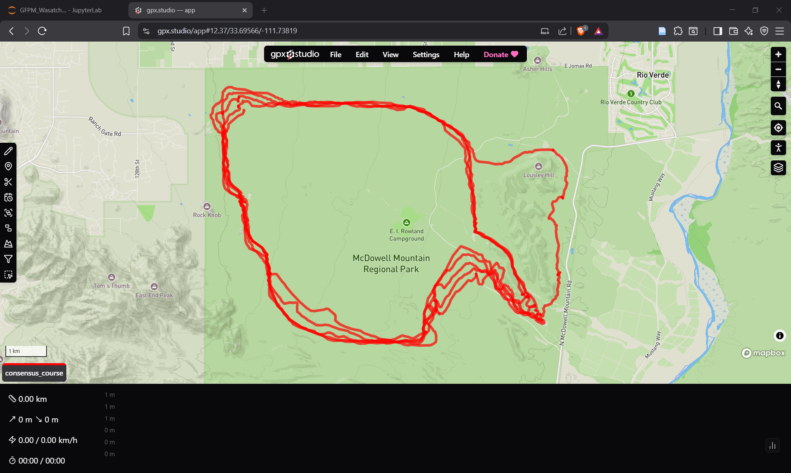

GPX Upscaling Dead End - Time for Plan B
GPX Upscaling Dead End - Time for Plan B
2025-12-28
TL;DR
- 10 races collected. Total now 28/450.
- Created consensus GPX for Javelina Jundred. Super janky.
- Abandoning GPX approach, switching to OSM + DEM.
The Long Story
I wish there was an easier way to get data at this stage. The frustrating part is I know how to use the Strava API and could automate this entire process - the activities are public, I have the technical skills - but Strava's API restrictions mean I'm stuck doing manual downloads. Maybe after I prove this app works I'll unlock the next tier of the developer battle pass. For now, at least I have scripts that helped me knock out 10 races in 20 minutes.
Then I pivoted to GPX analysis. My plan was to use ~30 GPX files to create a consensus course at higher resolution (~10m). The approach seemed sound: load all the GPX files, project lat/lon to planar UTM coordinates, compute cumulative distance for each track, resample everything onto a common 10m distance grid, aggregate by median to reduce GPS noise, apply Savitzky-Golay smoothing to suppress jitter, then transform back to lat/lon.
It was a mess. Even after tweaking the smoothing parameters and trying different aggregation methods, the output was unusable. The tracks had too much variance - GPS drift, different starting points, people cutting corners or wandering off trail. The median aggregation couldn't clean it up enough.

So that approach is dead. Back to first principles: I need high-resolution terrain data to derive gain, loss, rate of change, and variability for each mile, plus rolling windows to capture immediate demands and short/medium-term fatigue. More granular is better, but for an MVP, per-kilometer stats with 4km and 12km windows should work. I'll also explore cumulative metrics like total gain, loss, and time in the initial analysis.
What I actually need is simple: a course polyline and a DEM. Most ultras run on mapped trails - Javelina Jundred follows the Pemberton Trail, which OpenStreetMaps has. I'll see if I can use OSM for the course polyline for every course and USGS DEM for elevation data. The lower 48 states are mostly covered at 10m resolution, which should be perfect.
Testing this approach tomorrow.